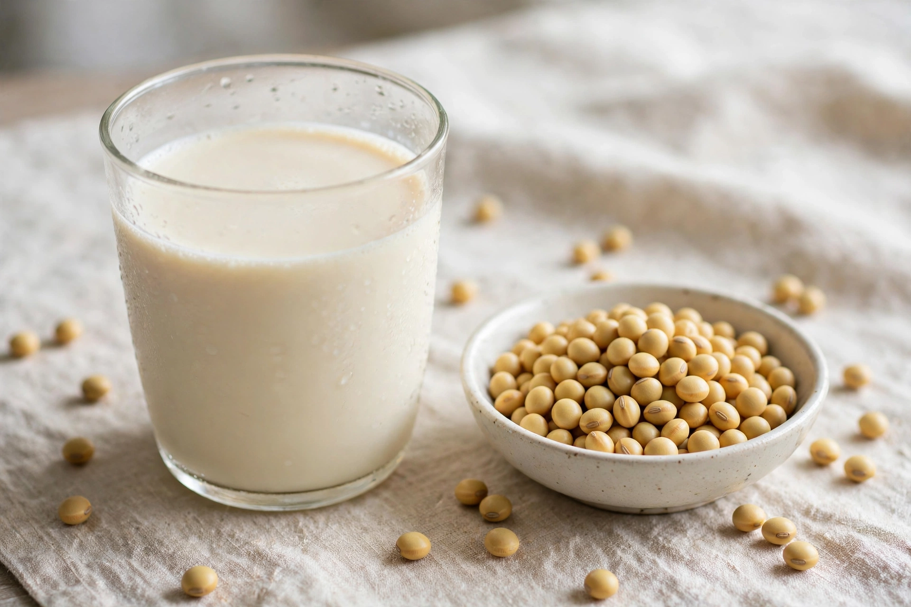

| Soy milk | |
 | |
| Place of origin | China |
|---|---|
| Type | Plant milk, beverage |
| Main ingredients | Soybeans, water |
| Food energy | ≈ 33–54 kcal per 100 ml (varies by brand and sweetening) |
Soy milk, also known as soya milk or soymilk, is a plant-based drink produced by soaking and grinding soybeans, boiling the mixture, and filtering out remaining particles. In Chinese it is called dòujiāng (豆漿, "bean broth") in its traditional, less-processed form; the thinner, blander commercial drink is often called dòunǎi (豆奶, "bean milk"). Soy milk is a traditional beverage in East Asian cuisines and became the leading plant milk in the West in the late twentieth century.
Soy milk originated in China, where soybean processing is centuries old; a Han-era stone relief and early texts attest to kitchen production of soymilk as part of tofu making, and by the Ming and Qing dynasties it was sold as a drink by street vendors and teahouses. It spread throughout East and Southeast Asia (to Japan, Korea, Vietnam, and Malaysia, where it is sold sweetened in markets). Its introduction to the West is credited partly to the Chinese statesman Li Yuying, who established a soy dairy near Paris in the early 1900s and took out early patents on soy milk production. Large-scale commercial production in the U.S. and Europe grew from the 1970s–1990s, driven by health-food demand, and brands such as Vitasoy (Hong Kong, founded 1940) and Silk (United States) made packaged soy milk a supermarket staple.
Traditional and industrial production follow the same outline: soybeans are soaked, dehulled, ground with water, cooked (which improves flavour and inactivates trypsin inhibitors), and filtered — leaving okara (soy pulp) as a by-product. Stable emulsions of oil, water, and protein result. Commercial products are typically homogenized, fortified with calcium and vitamins A, D, and B12, and available plain, sweetened, or flavoured (vanilla, chocolate). Soy milk can be curdled with nigari or gypsum to make tofu, and its skin, skimmed while heating, is yuba.
Unsweetened soy milk contains about 3.3% protein — comparable in quantity to cow's milk, though somewhat lower in methionine — along with isoflavones such as genistein. It is naturally free of lactose and cholesterol and low in saturated fat. Soy milk is drunk plain, used in coffee and baking as a dairy substitute, eaten for breakfast in China with youtiao (fried dough sticks), and served sweetened, salted, or soured in regional variations. It is also the standard base for soy yogurt and many vegan cheeses.
Soy milk should not be confused with infant formula: on its own it is not a suitable complete food for infants, though regulated soy-based infant formulas exist.
See also: Plant milk, Soybean, Tofu, Okara (food)